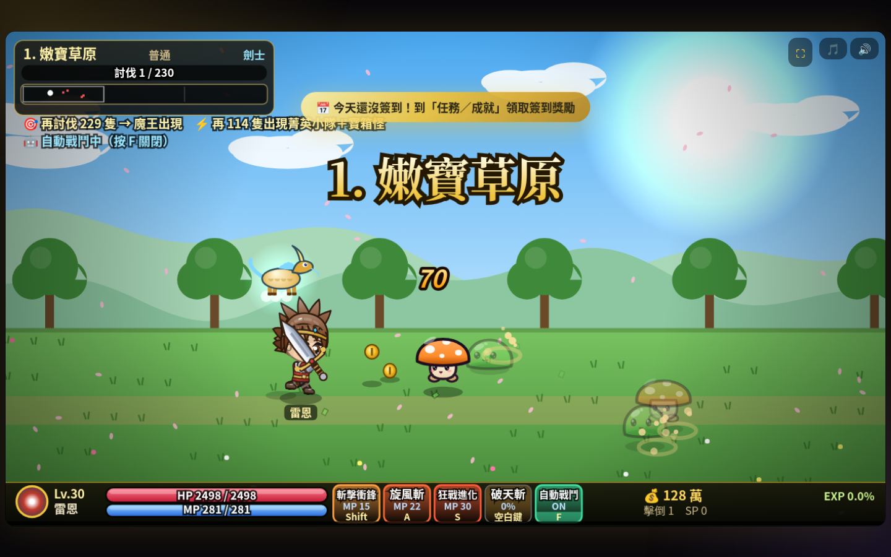
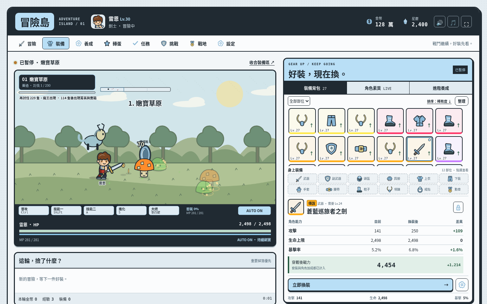
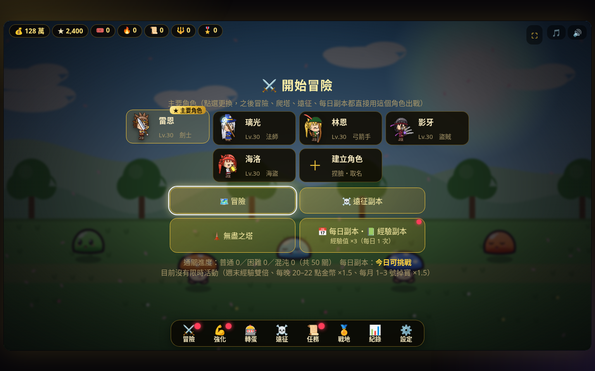
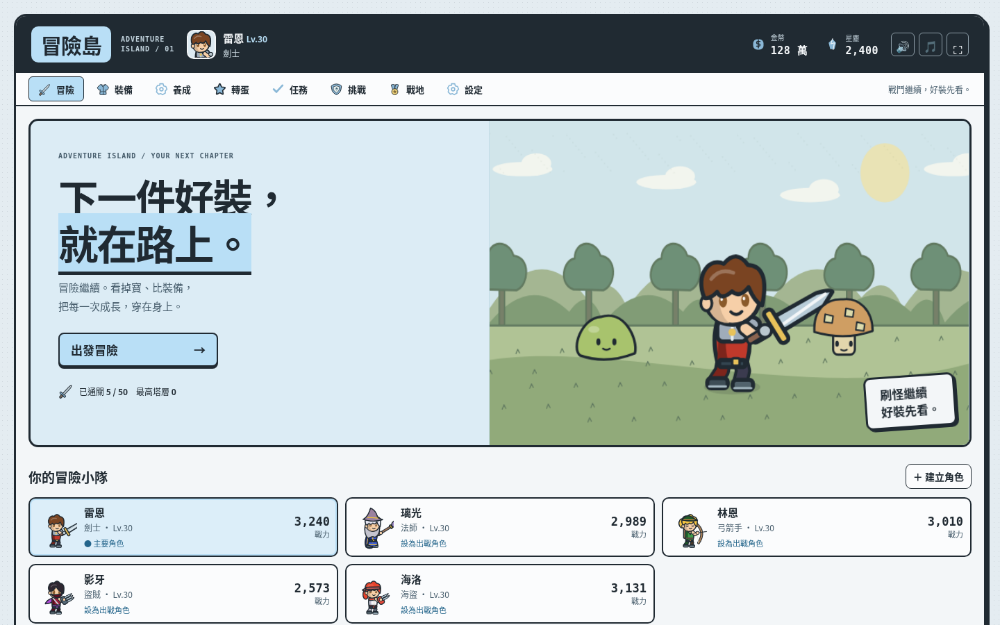
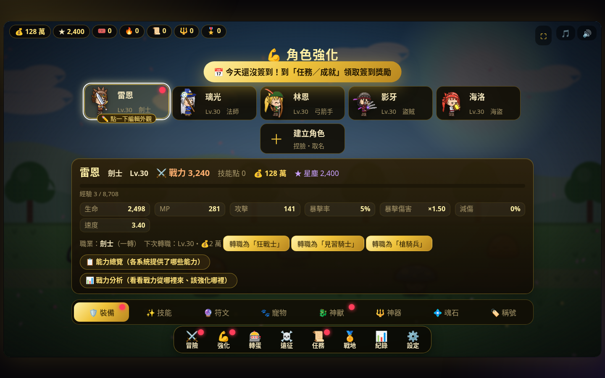
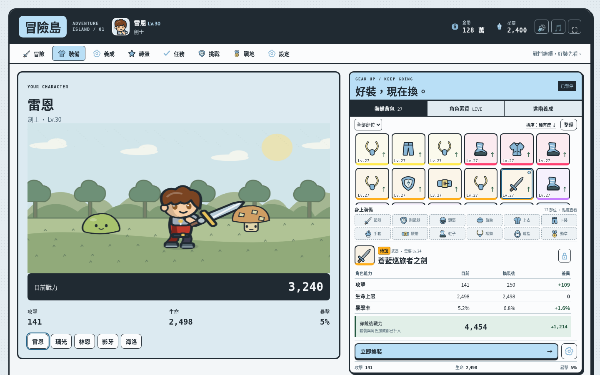

這次直接從重新上傳的原遊戲套用 v0.4。前次未通過的 d1942ae 沒有作為建置輸入。兩邊使用相同原版存檔、1440×900 視窗；戰鬥採相同亂數種子與原引擎第 90 幀，實體種類、位置、HP 與擊倒數逐項相等。為截取對照暫停；持續戰鬥的證據另見 live-trace.json。






聯絡表用來核對繪圖入口與資料覆蓋，不等於每個動畫幀、外觀組合或跨設備環境都已驗收。完整範圍與未驗證項目列在 VALIDATION.md。